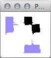
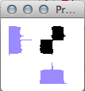

Streamlining Gamera
Posted by cmotuz on November 30, 2011
The Salzinnes project has gone public! I’m writing from Austria now, here to play in some concerts, yet I got the news right away in the form of a Facebook notification. But of course.
After feeding the first 60 or so pages of Salzinnes into the computer’s OMR system, Gamera, we decided it was time to see how efficiently it was actually learning. Gamera learns by making a library of images or “glyphs,” then recognizing new ones by comparing them to its library. It doesn’t just recognize images by their shape and size - after all, sizes can vary drastically depending on the resolution of an image - but by looking at elements such as how symmetrical they are, their black-to-white pixel ratio, and by the patters produced by their pixels when piled onto the x or y axis.
Here you can see that clivis and a podatus look much the same when the pixels are gathered up to the x (bottom) and y (left) axes of the images:
 
Obviously with these two, Gamera uses other tools to distinguish them!
Another thing we’ve done to streamline Gamera has been to pare down our glyph library. We had been adding glyphs to the library with every page, but loading up its accumulated 24000+ glyphs was becoming tedious, so Andrew told Gamera to delete any which would produce the same recognition results, and pared the library down to a mere 727. This smaller number also made it possible to go through the library manually and take out the inevitable spelling annomalies that had creeped in in the course of naming 24000 glyphs. (Now we’ve just abbreviated the names too so hopefully this should happen less.) To test it out, we evaluated the same page using both the 24000- and 727-glyph libraries and the latter won, recognizing more glyphs and, even more importantly, grouping together more unconnected elements to form neumes and clefs.
The other thing that slows the OMR process down is that it sees any unique item on the page as a possible glyph. If we don’t manually delete them before asking the system to classify the glyphs, then it will get confused by specks and lyrics: it offers to include i’s among the puncta inclinata, while specks usually get classified as custodes - not helpful! Gabriel has just come up with a way to provide images which are less speckled while not compromising Gamera’s ability to recognize neumes, which Laura tested yesterday and apparently it saved a noticeable amount of time. Andrew in the meantime has applied some of the lab’s previous work to detect the borders of the pages (which come out black when binarized) and to remove lyrics automatically.
The best thing about all of these upgrades to our OMR system is that they save human time. The few minutes per page, when we multiply by 600 pages, will result in the next weeks in a few hours saved - a very much appreciated thing especially at this time of year!